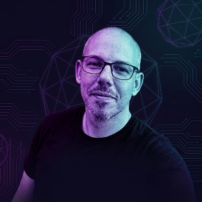

Üdvözöllek az oldalamon! Szlezák Tamás vagyok. A mindennapokban gépgazdaként dolgozom, ahol a pontosság és a megbízhatóság a legfontosabb számomra. Szabadidőmben szívesen foglalkozom technológiával, számítógépek telepítésével és összeszerelésével. A Linux világával még 2004-ben ismerkedtem meg; kezdetben Ubuntu-t használtam, majd több disztribúció kipróbálása után végül a Debian mellett köteleztem el magam. Autodidakta módon alap szintű HTML weboldalkészítést is tanultam. A technológia mellett a kertészkedés kapcsol ki igazán, különösen a különlegesebb növények nevelése. Szeretem a jól szervezett, tiszta dolgokat az élet minden területén.
Windows, Linux, MS Office, LibreOffice
© 2026 Szlezák Tamás. Minden jog fenntartva.